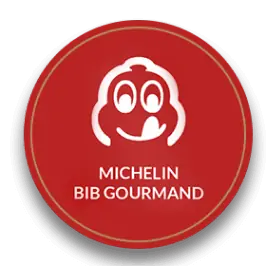
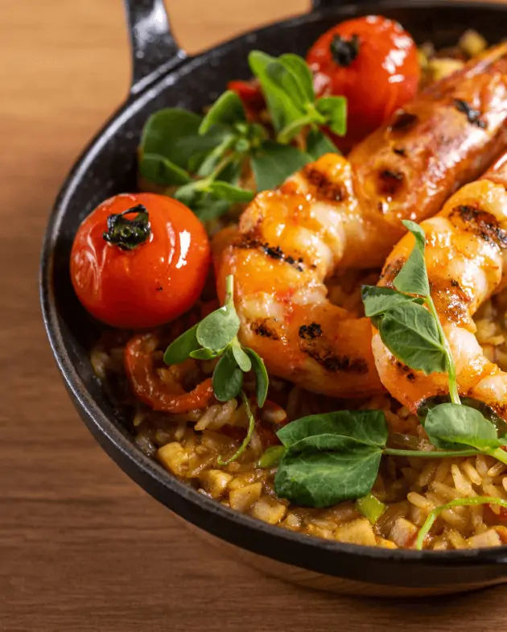
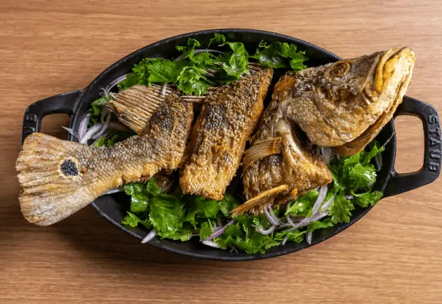
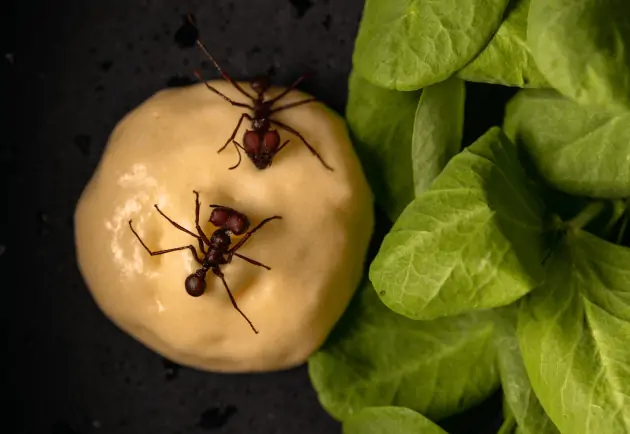
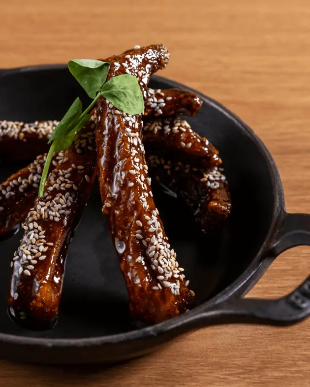
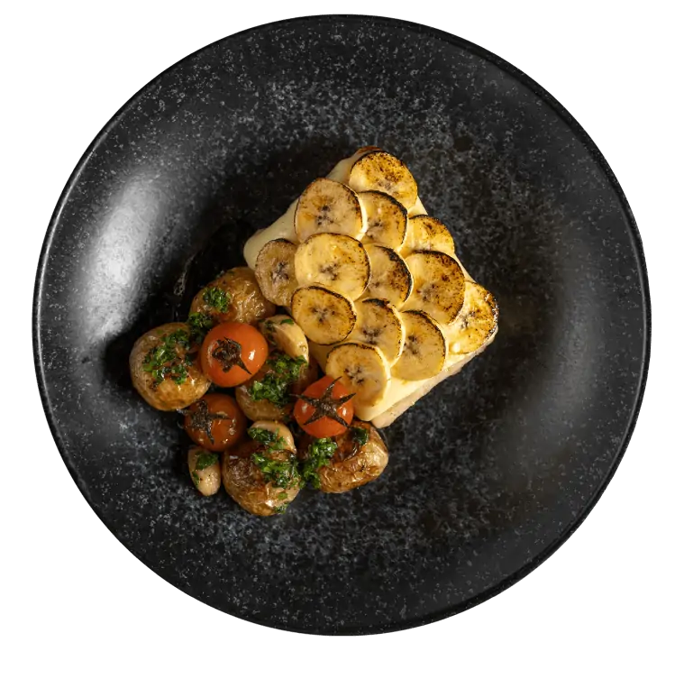

GASTRONOMIA AMAZÔNICA





Rua Tabapuã, 1410 - Itaim Bibi, São Paulo - SP
Terça a Sexta: 12h às 15h30 | 19h às 23h30
Sábado: 12h às 16h30 | 19h às 23h30
Domingo: 12h às 17h00
(11) 2506-6130
banzeirosp@grupobanzeiro.com.br